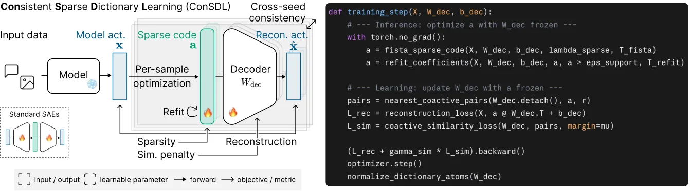
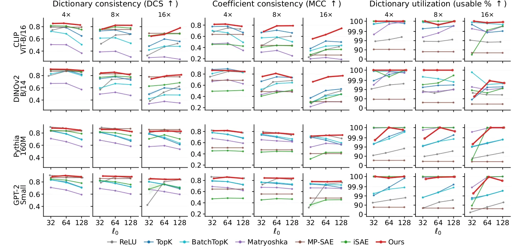
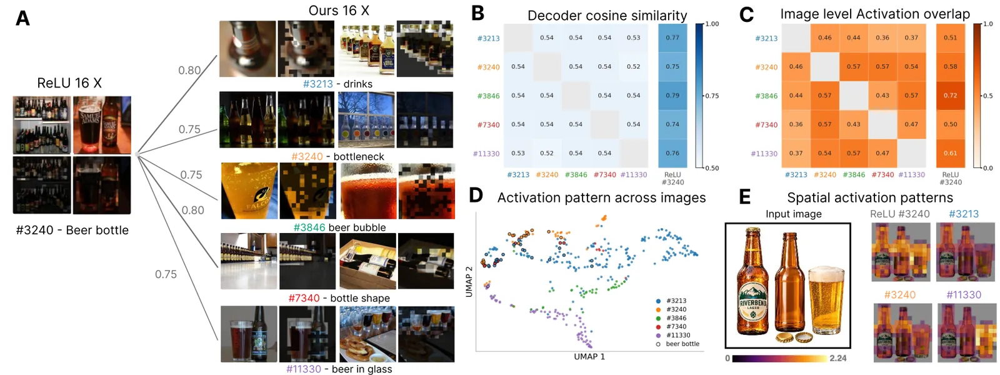

O Problema da Inconsistência em SAEs
Autoencoders esparsos (Sparse Autoencoders ou SAEs) tornaram-se a ferramenta padrão para descrever as representações internas de modelos fundacionais. A premissa é simples: decompor a ativação de cada neurônio em uma combinação linear esparsa de vetores de um dicionário aprendido. Empiricamente, esses vetores (átomos) alinham-se com conceitos interpretáveis, como cores em visão computacional ou sintaxe em processamento de linguagem natural. Isso permite auditorias de viés e explicações escaláveis sem um vocabulário pré-definido.
No entanto, existe uma limitação crítica que impede o uso confiável de SAEs em análise científica: a inconsistência. SAEs treinados nos mesmos dados e com a mesma configuração podem aprender dicionários substancialmente diferentes dependendo da semente aleatória (seed) inicial. Isso limita a reprodutibilidade e levanta dúvidas fundamentais: as features aprendidas refletem a verdade interna do modelo ou são artefatos do procedimento de treinamento? Trabalhos recentes mostram que SAEs podem falhar em recuperar features conhecidas em cenários sintéticos controlados.
Este artigo, de autores da KAIST e Helmholtz Munich, propõe uma solução para essa falha de consistência. Eles introduzem o Consistent Sparse Dictionary Learning (ConSDL), que substitui o encoder linear padrão por codificação esparsa por amostra (per-sample sparse coding). A hipótese central é que a estimativa subótima de coeficientes, gerada pelo encoder linear rápido, contribui para a instabilidade do dicionário. Ao otimizar os coeficientes para cada amostra individualmente antes de atualizar o dicionário, o ConSDL busca uma decomposição mais fiel e reprodutível.

A Mecânica do ConSDL
Para entender o ConSDL, precisamos olhar para a matemática da decomposição. Seja x a ativação do modelo e W_dec o dicionário de átomos. Um SAE padrão usa um encoder linear para prever os coeficientes esparsos a diretamente. Os autores apontam que essa única passagem é subótima comparada à otimização direta para o dicionário atual. O ConSDL remove esse encoder e resolve o problema de otimização para cada entrada x separadamente, encontrando o vetor de coeficientes a que minimiza o erro de reconstrução mais uma penalidade de esparsidade (norma L1).
A equação central envolve encontrar a >= 0 que minimize ||x - W_dec * a - b_dec||^2 + lambda * ||a||_1. Como resolver isso eficientemente em cada passo de treinamento? Os autores utilizam o FISTA (Fast Iterative Shrinkage-Thresholding Algorithm). O FISTA realiza passos de gradiente na reconstrução seguidos de thresholding suave não-negativo para impor a esparsidade. Isso garante que os coeficientes usados para atualizar o dicionário sejam os melhores possíveis para aquela amostra específica, dado o dicionário atual.
Correção de Viés e Redundância
Apenas usar o FISTA não é suficiente. A penalidade L1, embora promova esparsidade, introduz um viés de contração (shrinkage bias). Ela tende a subestimar a magnitude dos coeficientes não-nulos para reduzir a penalidade. Se usarmos esses coeficientes contraídos para atualizar o dicionário, os átomos aprendidos serão imprecisos. O ConSDL resolve isso com um passo de 'refitting' (reajuste). Após identificar quais átomos estão ativos (suporte S_sc), o método recalcula as magnitudes desses coeficientes mínimos apenas pelo erro de reconstrução, sem a penalidade L1. Isso corrige a contração sem ativar novos átomos espúrios.
Outro problema comum em SAEs é a redundância do dicionário: múltiplos átomos convergem para direções similares, representando o mesmo conceito. O ConSDL introduz um regularizador de similaridade co-ativa. Em vez de penalizar a similaridade entre todos os pares de átomos, ele penaliza apenas a similaridade entre átomos que estão ativos simultaneamente para a mesma amostra. Isso força o dicionário a manter átomos distintos e complementares, melhorando a utilidade da representação esparsa.
Validação em Cenários Sintéticos
Antes de testar em modelos grandes, os autores validaram o ConSDL em 16 configurações sintéticas controladas. O objetivo era verificar se o método podia recuperar o dicionário verdadeiro (ground-truth) e os coeficientes corretos. Em cenários onde métodos SAE padrão falham — especialmente com dicionários grandes e probabilidades desequilibradas de seleção de átomos — o ConSDL alcançou recuperação quase perfeita. Isso apoia a hipótese de que uma estimativa de coeficientes mais precisa leva diretamente a um aprendizado de dicionário mais consistente e correto.

Resultados em Modelos Fundacionais
Os ganhos teóricos se traduzem na prática. O ConSDL foi testado em backbones de visão (CLIP) e linguagem, variando larguras de dicionário e níveis de esparsidade. A métrica de consistência entre sementes (cross-seed consistency) melhorou significativamente. O ConSDL aumentou a consistência do dicionário em 17,6% e a dos coeficientes em 35,9% em média, comparado a seis métodos SAE base (incluindo ReLU SAE e others). Isso significa que, independentemente da semente aleatória, o ConSDL descobre os mesmos conceitos fundamentais do modelo, algo que os SAEs padrão não garantem.
Além da consistência, o ConSDL mostrou melhor utilidade explicativa. Em testes de probing esparsos, as features descobertas foram mais preditivas de conceitos específicos. Para visão, usaram datasets de classificação de objetos; para linguagem, 113 tarefas binárias de SAE-Probes. O ConSDL manteve a precisão superior mesmo com expansão de dicionário de 16x, demonstrando que a consistência não vem à custa da capacidade representacional.

Análise de Granularidade e Limitações
Uma análise interessante revela que o ConSDL tende a dividir conceitos amplos em features mais granulares. No exemplo da 'garrafa de cerveja', enquanto o ReLU SAE aprendia um único átomo genérico, o ConSDL aprendeu cinco átomos distintos, cada um capturando aspectos específicos (rótulo, formato, líquido), mas todos com alta similaridade de cosseno com o átomo do ReLU. Isso sugere que o ConSDL não apenas é consistente, mas também descobre uma estrutura de features mais rica e detalhada, evitando a colapso de representações.
Apesar dos avanços, o paper admite limitações. O ConSDL é computacionalmente mais custoso que SAEs lineares, pois requer otimização iterativa (FISTA) por amostra em cada passo de treinamento. O paper foca em modelos de escala média e não testa a escalabilidade para modelos de trilhões de parâmetros em tempo real. Além disso, a técnica é específica para representações lineares; extensões para arquiteturas não-lineares ou outros tipos de regularização permanecem como trabalho futuro. A consistência melhorada não elimina a necessidade de validação humana dos conceitos descobertos, mas fornece uma base mais sólida para tal validação.
Conclusão
O ConSDL propõe uma mudança de paradigma na aprendizagem de dicionários esparsos: parar de confiar em encoders lineares aproximados e voltar à otimização direta por amostra. Ao combinar codificação esparsa por amostra, refitting de coeficientes e regularização de similaridade co-ativa, os autores demonstram que é possível alcançar consistência cruzada de sementes superior em modelos de visão e linguagem. Este trabalho estabelece um novo padrão para SAEs, priorizando a confiabilidade e a reprodutibilidade sobre a velocidade bruta de inferência.
O que fica
- SAEs padrão produzem dicionários inconsistentes entre sementes aleatórias, limitando a reprodutibilidade.
- ConSDL usa otimização por amostra (FISTA) em vez de encoder linear para estimar coeficientes esparsos.
- Refitting corrige o viés de contração da norma L1, melhorando a precisão da reconstrução.
- ConSDL melhora a consistência de dicionários em 17,6% e coeficientes em 35,9% sobre bases SAE.
Paper original: Beyond SAEs: Consistent Concept Discovery with Sparse Coding
Comentários
Nenhum comentário ainda. Seja o primeiro.